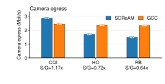
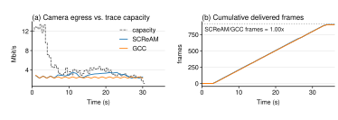
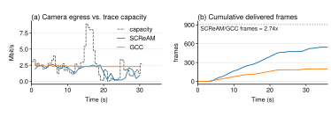
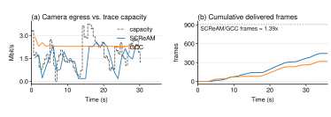

Claim: SCReAM preserves more decodable video than GCC on calibrated stressed realistic 5G traces.
Current verdict:supported
Each trace compares SCReAM and GCC with the trace, video workload,
bitrate bounds, recovery settings, workers, and sink held fixed. CQI is
the high-capacity control where both controllers deliver nearly all
frames; HO and RB are the stressed traces where SCReAM delivers more
decodable video with lower camera egress.
Main claim:
SCReAM wins on the stressed HO/RB traces because its post-payload RTP
pacing turns congestion-control decisions into lower camera egress,
while GCC lowers its estimator target but this pipeline still emits
multi-Mbit/s RTP that the trace cannot carry, leaving fewer complete
frames decodable at the viewer.
Supporting evidence:
Controlled comparison: within each trace pair, the trace, video, codec, bitrate bounds, recovery settings, sink, workers, and run length are fixed; only congestion_control.algorithm varies.
Stress condition: CQI is the high-capacity control and both controllers deliver nearly all frames, so the advantage appears only when HO/RB capacity actually stresses the stream.
Outcome: on HO, SCReAM delivers 2.74x GCC's viewer frames; on RB, it delivers 1.39x GCC's viewer frames.
Efficiency: the advantage is not from sending more traffic; SCReAM uses 0.72x GCC's camera egress on HO and 0.64x on RB.
Mechanism evidence: GCC's target falls on the stressed traces, but its measured camera egress remains about 2.35 Mbit/s on HO and 2.32 Mbit/s on RB.
Figure H4-1. Mean viewer-depayloaded frames by trace. Each grouped pair compares SCReAM and GCC under the same translated trace and video workload; S/G labels show the SCReAM/GCC frame ratio.

Figure H4-2. Mean camera egress bitrate by trace. S/G labels show whether the delivered-frame advantage came from sending more traffic; on HO and RB, SCReAM produces lower camera egress than GCC.

Figure H4-3a. CQI fixed-trace time series. Left: shared capacity and camera egress bitrate. Right: cumulative viewer-depayloaded frames. This is the high-capacity control where both controllers deliver nearly all frames.

Figure H4-3b. HO fixed-trace time series. The same trace is used for both controllers; the right panel shows the SCReAM delivered-frame curve separating from GCC.

Figure H4-3c. RB fixed-trace time series. The same trace is used for both controllers; the right panel shows the moderate SCReAM frame-delivery advantage.
Result Summary
Trace
SCReAM frames
GCC frames
Frame ratio
SCReAM/GCC camera egress
Interpretation
CQI x0.33
903.7
901.3
1.00x
2861.2 / 2446.4 kbit/s
High-capacity control; both deliver nearly all frames.
HO x0.33
544.7
199.0
2.74x
1696.0 / 2353.0 kbit/s
Strong SCReAM advantage with lower measured camera egress; GCC target falls but actual egress stays high.
RB x0.33
445.3
319.3
1.39x
1480.8 / 2324.9 kbit/s
Moderate SCReAM advantage with lower measured camera egress; GCC target falls but actual egress stays high.
Findings and Limitations
Finding: on the stressed HO and RB traces, SCReAM preserves more decodable video than GCC.
Finding: on HO and RB, GCC produces higher camera egress, but that extra traffic does not become more decodable video at the viewer.
Finding: GCC's estimator target is not enough to explain camera output here; the measured encoded and egress rates remain high on stressed traces.
Finding: on CQI, both controllers deliver nearly all frames, so the trace is not discriminating for this workload.
Limitation: this is a fixed-trace, fixed-workload result; it should not be generalized to every trace or every video workload.
Limitation: latency metrics still carry clock-skew artifacts, so H4 uses frame delivery and camera egress as the primary evidence.